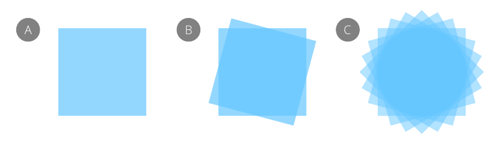

Increase your efficiency by duplicating objects or groups.
Affinity Designer lets you make copies of your original object. Once duplicated, you can modify the duplicate to create design variations.
Do one of the following:
If you duplicate an object and then transform the duplicate, you can immediately duplicate this transformed object. If you do, the newly created object will adopt the transform of the duplicate and will be also transformed again using the same settings. In other words, the transform is applied accumulatively to subsequent duplicates.

From the Edit menu, select Duplicate.
A duplicate is created and the transform is automatically applied to the duplicate.